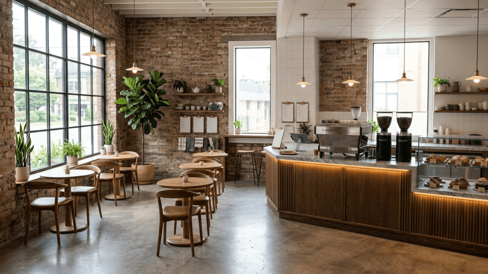
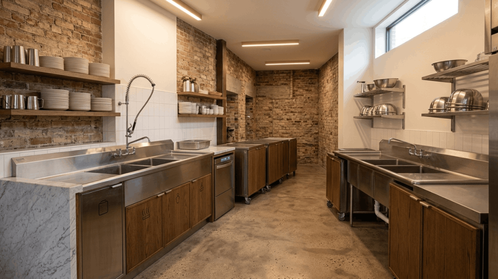
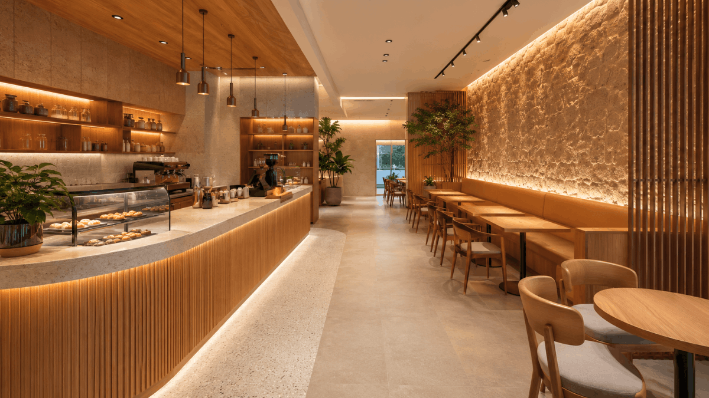
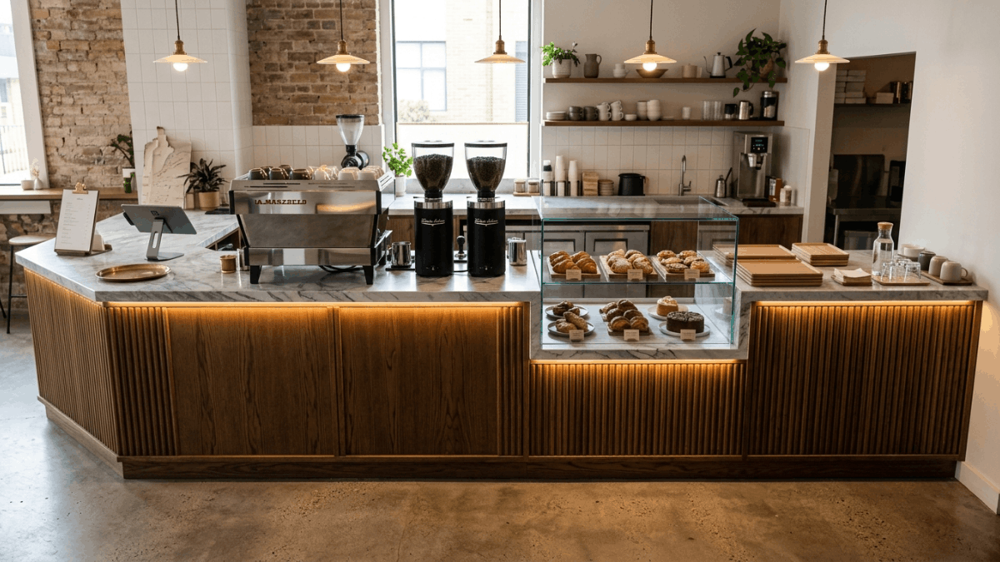
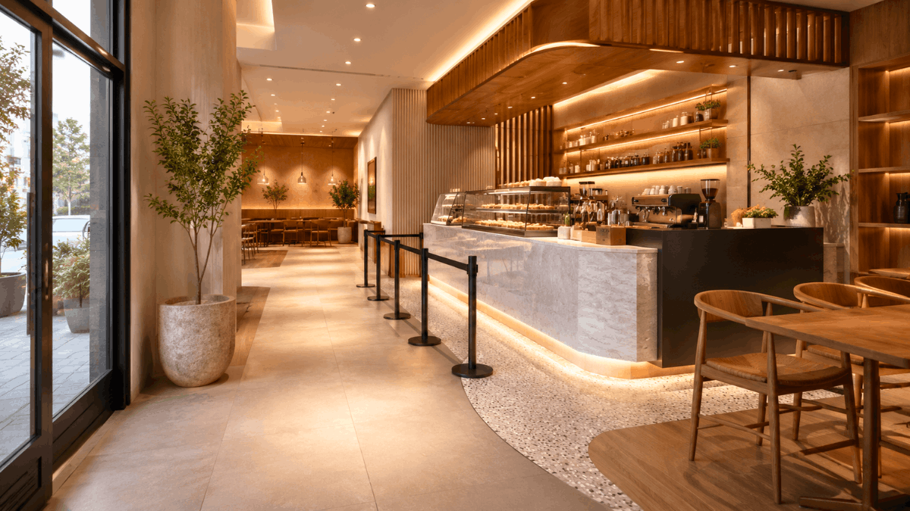

By SprintCo | Restaurant Design Experts
A cafe lives or dies by its layout. Not its coffee, not its branding, not even its location, though all of those matter enormously. The layout is what determines whether your baristas can move efficiently during a morning rush, whether your guests feel comfortable enough to stay for a second cup, and whether your staff can clean and restock without grinding service to a halt.
Most cafe owners think about layout late, after the lease is signed, after the aesthetic direction is set, sometimes after the fit-out has already begun. At SprintCo, we think about it first. Because a cafe that looks beautiful but functions poorly will exhaust your team, frustrate your guests, and cost you money every single day of operation.
This guide covers everything a cafe owner needs to plan for when designing a functional layout, from the workflow behind the counter to the seating decisions that shape the entire guest experience.

Start With the Flow, Not the Furniture
The most common layout mistake in cafe design is starting with furniture placement, deciding where the tables go, where the banquette sits, and where the feature wall lands before establishing the operational flow the space needs to support.
Flow comes first. Every cafe has a fundamental movement logic: guests enter, queue, order, pay, wait, collect, and find a seat. Staff receive stock, store it, prepare drinks and food, serve, clear, and clean. These two flows, guest and staff, need to move efficiently without constantly crossing each other.
Before any furniture is placed or any partition is considered, map both flows on your floor plan as lines of movement. Where do they intersect? Where do they create congestion? The answer to those questions shapes every subsequent layout decision.
SprintCo always produces a flow diagram before producing a furniture plan. It takes less than an afternoon and prevents weeks of costly revisions.

The Counter: The Engine of the Cafe
The counter is the operational heart of your cafe. Everything else in the layout radiates from it. Getting the counter design and position right is the single most important decision in a cafe fit-out.
Counter Positioning
Where your counter sits relative to the entrance determines the entire guest journey. The most effective layouts position the counter so that guests naturally move toward it upon entering — visible, accessible, and clearly the first destination. A counter tucked into a corner or obscured by a partition forces guests to search for the ordering point, creating hesitation and reducing the pace of service.
In a rectangular space, the counter typically runs along one of the long walls, perpendicular to the entrance, or across the back of the room. The right position depends on your specific floor plan, but the principle is consistent: the path from the door to the counter should be obvious and unobstructed.
Counter Length and Workflow Zones
A well-designed cafe counter is divided into distinct workflow zones, and the length needs to accommodate all of them without crowding. The core zones are: ordering and payment, espresso machine and grinder, milk steaming and drink finishing, food display and service, and a dedicated handoff point where completed orders are collected by guests.
Each of these zones has spatial requirements for equipment, for staff movement, and for the ergonomics of the specific tasks being performed. A counter that is too short collapses these zones into each other, creating a chaotic working environment where baristas are constantly in each other’s way. A counter that is too long creates unnecessary travel distance between stations during busy service.
For most independent cafes serving espresso-based drinks and a food offering, a counter between 4 and 6 metres in length hits the sweet spot. Higher-volume operations may need more. The specific equipment list and team size should drive the specification.
The Handoff Point
The collection point where guests pick up completed drinks deserves specific attention because it is one of the highest-friction zones in any cafe. When the handoff point is unclear, guests cluster around the end of the counter, block the ordering queue, and create a congestion problem that cascades through the entire service.
A clearly defined handoff zone, physically separated from the ordering point and ideally with a small dedicated counter surface where drinks can be set down and names or numbers called, dramatically reduces this friction. In higher-volume cafes, a separate pickup station entirely away from the main counter is worth the floor space it occupies.
The Back of House: Plan It Properly or Pay for It Later
The area behind your counter and in your back-of-house is where most cafe owners underinvest in planning. The result is a workspace that functions adequately on a quiet Tuesday and falls apart completely during a Saturday morning rush.
Equipment Placement and Ergonomics
Every piece of equipment behind the counter has an optimal position relative to every other piece. The espresso machine should sit at a height and position that allows the barista to pull shots, steam milk, and assemble drinks without excessive reaching, twisting, or stepping. The grinder should be immediately adjacent to the machine. The refrigeration for milk should be within one step of the steam wand, not across the counter.
These seem like small details. Across two hundred coffees in a morning service, the cumulative impact of poor ergonomics is significantly slower service, more errors, and a physically demanding shift that burns out good staff faster.

Storage and Dry Goods
Cafes consistently underestimate their storage requirements. A busy independent cafe goes through a considerable volume of coffee, milk, syrups, cups, packaging, cleaning supplies, and food ingredients. All of this needs a home, ideally a dedicated dry storage area separate from the main workspace, with shelving that is accessible without disturbing service.
Cold storage requirements are equally important to specify accurately before the fit-out begins. Under-counter refrigeration for daily milk requirements, a separate unit for food ingredients, and potentially a small walk-in or upright for bulk storage. The right configuration depends on your menu and your order frequency.
The Dish and Waste Station
Where dirty cups and plates go and how they move from the guest-facing environment to washing is a workflow detail that gets almost no attention in cafe design and causes daily operational pain when it’s wrong.
The wash station needs to be positioned so that floor staff clearing tables have a logical, direct path to deposit dirty wares without crossing the main service flow. A wash station positioned on the wrong side of the counter forces staff to navigate through the ordering queue with armloads of used cups every single service, every single day.
Seating: More Strategic Than It Looks
Seating decisions in a cafe layout involve more variables than most owners initially consider. It’s not just about maximising covers, it’s about creating a mix of seating types that serves different guest occasions, supports different dwell times, and allows the cafe to function at varying levels of occupancy throughout the day.
Cover Count vs. Comfort
The temptation in a small cafe is to maximise the number of seats. More covers mean more revenue potential, in theory. In practice, a cafe that feels crowded and uncomfortable at full occupancy pushes guests toward takeaway or drives them to competitors with more breathing room. The right cover count is the one that allows your space to feel full without feeling uncomfortable.
A general planning principle: allow a minimum of 1.5 square metres per seated guest in the dining area, exclusive of circulation paths. This is a minimum, not a target — 2 square metres per guest produces a significantly more comfortable and commercially effective environment in most cafe formats.
Mixing Seating Types
A well-designed cafe offers a range of seating typologies rather than a single format repeated throughout the room. The standard mix for an independent cafe includes:
Banquette or bench seating along walls creates efficient, space-saving seating that guests find comfortable for longer stays. It also allows flexible table configurations, two-tops that push together for groups.
Small two-top tables in the main floor area serve the largest segment of cafe guests, solo visitors and pairs, who make up the majority of cafe traffic in most locations.
A communal table or bar seating along a window or wall serves solo guests who don’t want a private table and laptop workers who appreciate a dedicated surface. This seating type also makes the cafe feel active from the street, visible, occupied, and social.
Higher stools at the counter work well in compact cafes where floor space is limited. They keep the energy close to the action and work particularly well for quick visits.
The specific mix depends on your cafe’s concept, your target guest profile, and your floor area. SprintCo develops a seating matrix for every cafe project, matching seating type to dwell time expectation, revenue per seat, and spatial efficiency before a single piece of furniture is specified.

Circulation Between Tables
Table spacing often exposes poor planning. Primary paths should be at least 1.1 metres wide, while secondary aisles must allow easy movement without discomfort. Accessible seating isn’t optional; it’s both a legal requirement and a mark of thoughtful design, built into every SprintCo layout.
Acoustics: The Overlooked Comfort Factor
Excessive noise drives guests away. Hard surfaces like concrete, glass, and tile reflect sound, quickly making spaces uncomfortable. The fix is simple: add absorption without losing aesthetics. Upholstery, soft furnishings, and acoustic panels reduce noise effectively.
The goal is a space where conversations feel natural, something small but impactful.
Natural Light and Orientation
Seating should maximise natural light, while service areas can sit deeper inside. However, strong sunlight can become uncomfortable, making shading solutions essential. Lighting should also transition seamlessly from day to night, maintaining the same warmth and atmosphere throughout.
What to Plan Before You Brief a Designer
If you’re preparing to design or redesign a cafe, the most valuable thing you can do before briefing a designer is to answer the following questions clearly:
What is your projected daily cover count and peak service volume? This determines counter length, equipment specification, and seating numbers.
What is your menu scope: coffee only, food included, alcohol? Each addition changes the equipment, storage, and spatial requirements significantly.
What is your target dwell time, quick visits, work-from-cafe guests, leisurely brunchers? This shapes your seating typology mix.
What are your delivery and waste logistics? Where does stock arrive, and where does waste leave? These flows need to be accommodated in the layout from day one.
The clearer your brief on these operational questions, the more efficiently a design team can translate your concept into a layout that actually works.

Inside SprintCo’s Design Thinking
Every cafe SprintCo designs begins with the operational brief before the aesthetic one. We ask about service flow, team size, equipment lists, and peak volume before we discuss materials, colour palettes, or furniture styles. This is not because aesthetics matter less than a cafe’s visual identity, which is enormously important to its commercial success, but because a beautiful cafe that operates badly will eventually fail regardless of how good it looks.
The best cafe layouts feel effortless. Guests move naturally from door to counter to seat. Staff work with precision because the space supports rather than fights their movements. The room is full without feeling cramped. The noise level is animated without being exhausting. None of this happens by accident. It is the result of a disciplined, operationally grounded design from the very first plan.
Planning a new cafe or rethinking an existing one? Talk to SprintCo, we’ll make sure the layout works before anything else does.
SprintCo Restaurant & Hospitality Design | Designing spaces that perform as well as they look.
Pan-India presence | 3500+ F&B spaces delivered — Visit SprintCo’s Website